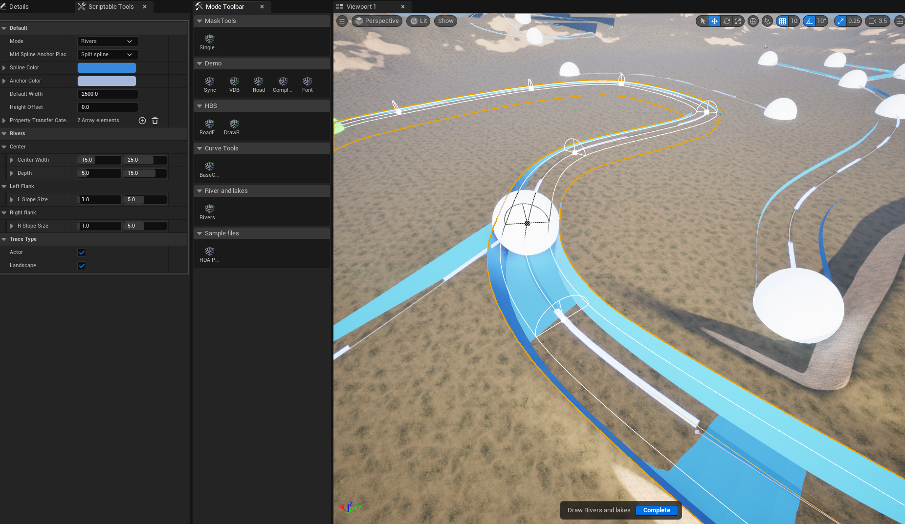
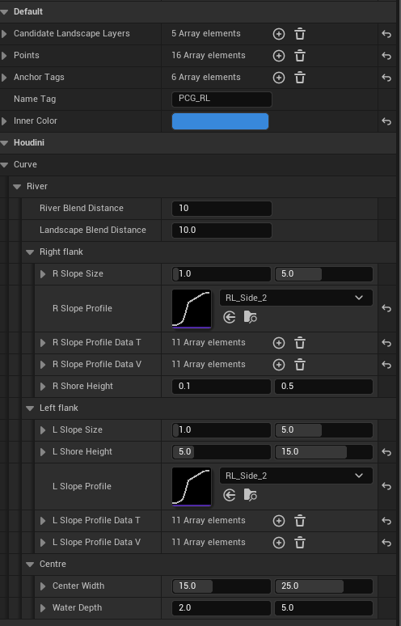
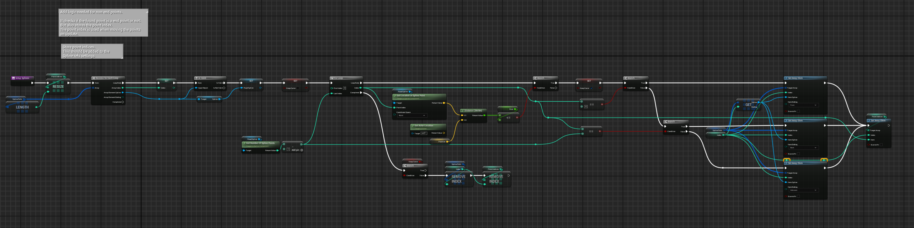
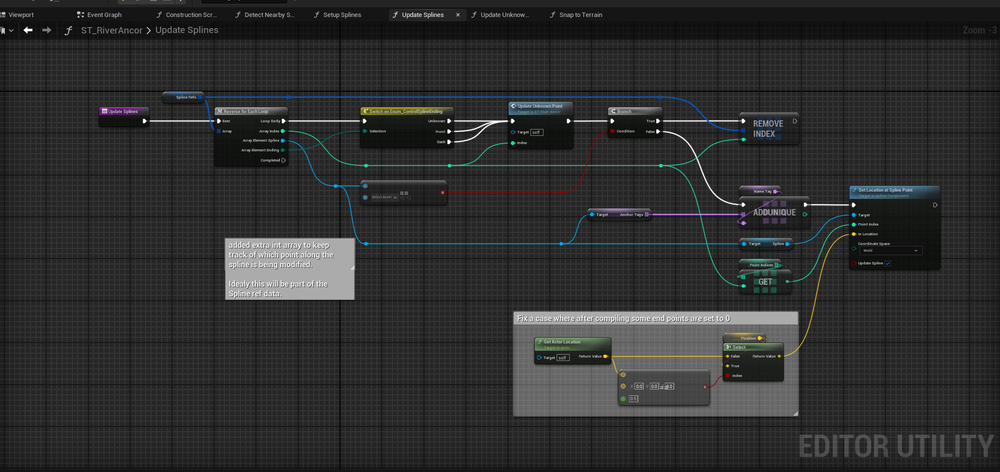

Rivers {Unfinished}
Lightspeed studios / January 2023
River and lakes
Unfinished work
A tool to create rivers and lake systems using a combination of Unreal blueprints and Houdini. All the interface work and providing fast iteration times was on the Unreal side. making use of scriptable tools, geometry blueprints and other systems. Then Houdini takes the data to generate the final results. The system builds upon a set of scriptable tools and blueprints developed by a teammate. Which handles most of the curve and anchor point interactions. But was then expanded upon to provide tool specific features.
Planed features where the addition of influencers. objects that locally change the base settings of a river. Giving more control to the artist.
 – Unfinished state of scriptable tool interface
 – Current set of river properties
 – Blueprint system example
 – Blueprint system example